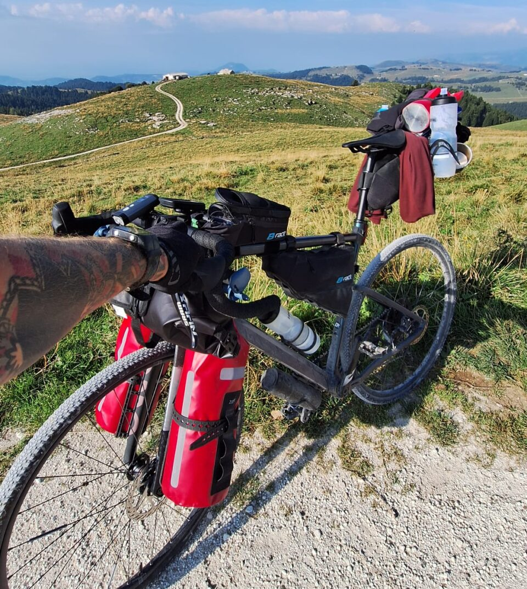
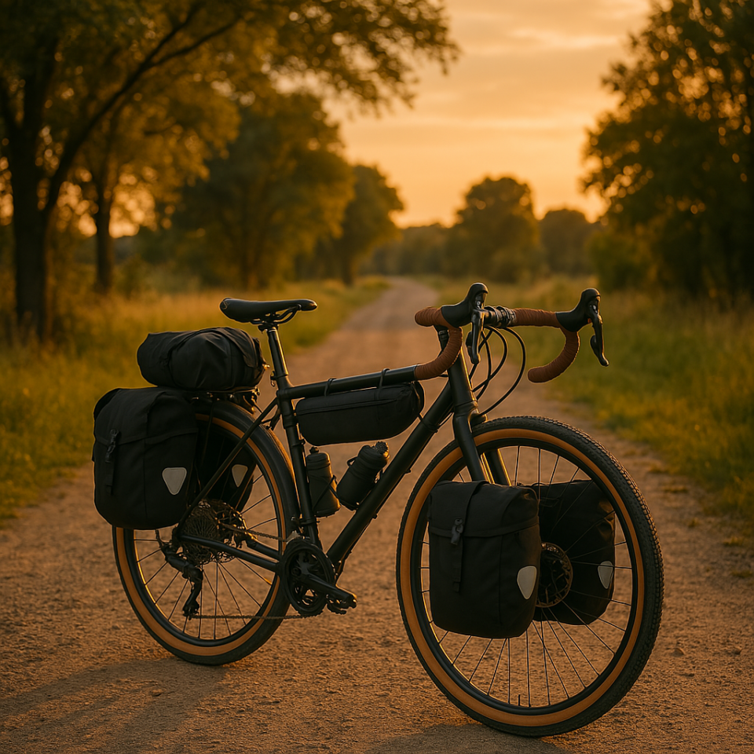
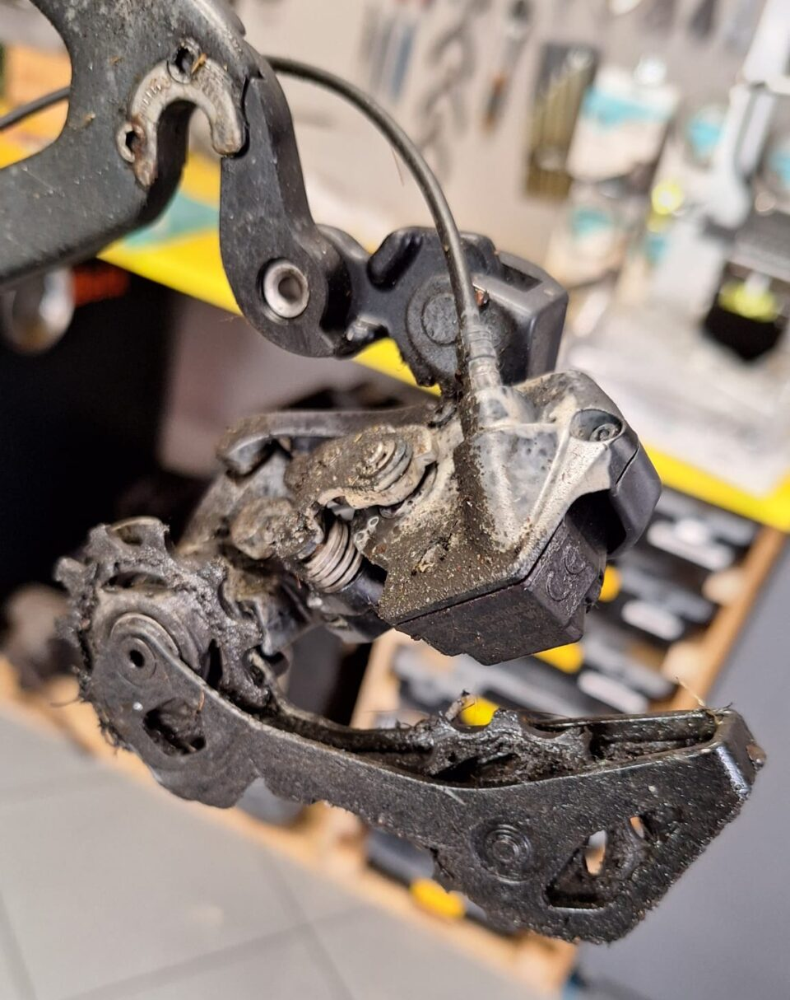
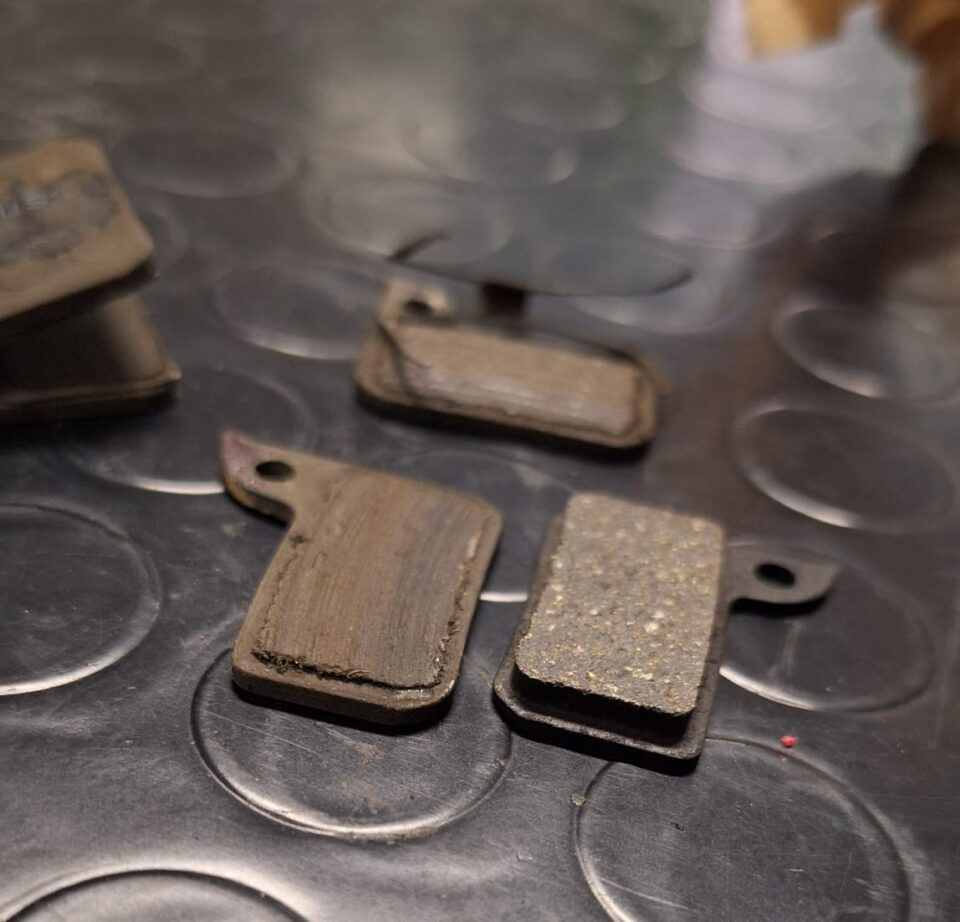
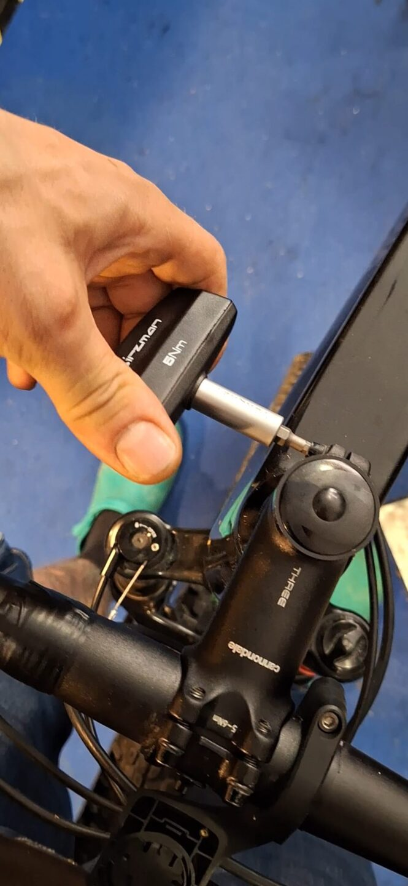
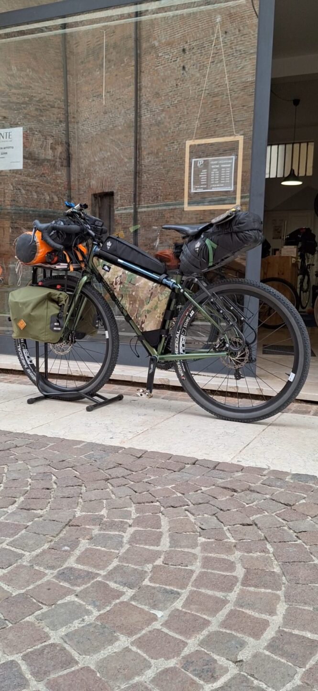

Ecco la mia checklist dei controlli da fare sulla bici, pensata per chi vuole viaggiare tranquillo e prevenire imprevisti. Non serve un'officina attrezzata: bastano un po' di attenzione, gli attrezzi giusti e qualche minuto in più prima di partire.
La guida pratica per partire sereni

-
01
Stato e pressione delle gomme
Controlla lo stato di usura: cerca tagli, screpolature o fili metallici visibili. Gonfia alla pressione corretta riportata sul fianco della gomma (es. 4.5 – 6 bar). Se viaggi con carico, puoi salire leggermente di pressione per evitare forature.
Porta una mini-pompa e almeno una camera d'aria di scorta -
02
Trasmissione: pulizia e lubrificazione
Se la catena fa rumore, va pulita e lubrificata. Verifica che i cambi funzionino su tutta la scala dei rapporti. Una catena molto usurata può rovinare pignoni o rompersi sotto sforzo.
Se non hai un attrezzo per misurare l'usura, passa in officina
-
03
Freni
Freni a disco: verifica che le pastiglie non siano troppo consumate. Pulisci i dischi con un panno di carta pulito. V-brake: controlla che i pattini non siano secchi o consumati a scalino. Testa la frenata: deve essere decisa, senza rumori o sfregamenti. La sensazione sulla leva deve essere netta.
Fai un giro test prima del viaggio per verificarli bene
-
04
Bulloni: stringi tutto con la giusta forza
Tieni bloccato il freno anteriore e, spingendo la bici avanti e indietro, verifica se ci sono giochi sullo sterzo. Controlla sella, portapacchi, parafanghi. Afferra il cerchio e prova a fare forza in senso laterale: così verifichi i mozzi. Bastano una brugola e pochi minuti.
Se senti cigolii strani, controlla anche i pedali
-
05
Luci, catarifrangenti e campanello
Controlla che le luci anteriori e posteriori funzionino. Ricarica o cambia le batterie. Verifica i catarifrangenti su ruote e pedali.
-
06
Prova a pieno carico
Fissa le borse sulla bici: non devono toccare ruote o pedali. Fai un breve giro con tutto montato. Non testare il materiale direttamente durante il tour. Bilancia il peso tra anteriore e posteriore.

-
07
Kit di emergenza
Prepara sempre un kit minimo. Non pesa, ma può salvarti il viaggio.
Il kit di emergenza
Non ti senti sicuro a fare i controlli da solo?
Passa da noi prima della partenza: check-up completo in officina, ti diciamo esattamente cosa c'è da sistemare e cosa puoi lasciare.